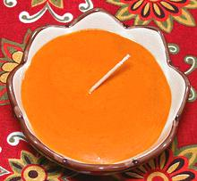

 |
Xató / RomescoSpain - Catalunya - Xató | ||||
| Makes: Effort: Sched: DoAhead: |
6 oz ** 20 min Yes |
This sauce is typical of Catalunya, in the northeast corner of Spain. Recipes vary a bit from town to town, but in all cases it's a thick red sauce. | |||
|
|
1 4 12 1/4 1/8 1/2 1/4 |
cl t c c |
Dried Chili (2) Garlic Hazelnuts (3) Salt Pepper Olive Oil ExtV Wine Vinegar (4) |
This sauce is most famous as the dressing for Xatonada Salad, but it is also used as a dip or dressing for fish, snails, chicken, lamb and vegetables. Make - (20 min)
|